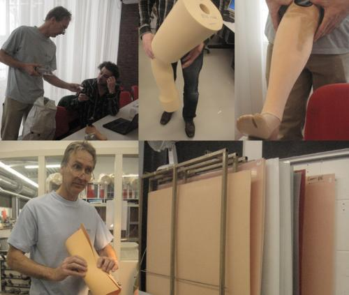

2013-10-07
原作/Alex Schaub, Deanna Herst, Tommy ‘Imot’ Surya, Irene ‘Ira’ Agrivina
如果你計畫要為發展中國家如印尼製造一個50元美金的膝下義肢，你會怎麼開始?有可能考慮西方世界裡要花費4000元美金的膝下義肢嗎?Waag Society在荷蘭阿姆斯特丹的Fab Lab，以及一個在印尼Yogyakarta的媒體與藝術工作室「the House of Natural Fiber(HONF) 」為了解答這個問題展開合作計畫。

HONF已經在附近地區展開了一些計畫，從藝術和設計到教育與公共服務，各方面都有。就如同它以往一貫的關注在人和環境之互動上，HONF根據當地社區的需要來選擇和型塑計畫。計畫之一包括研究與機器人、開放資源和科學家(如微生物學家)的生產與製造過程。
在HONF支持下獲利的合作機構中，有一個是給身心障礙人士的矯治中心Yakkum。 HONF已經和Yakkum合作將近九年，藉由藝術和賦權的工作坊成為非正式的中介人和促進者。與Yakkum合作使HONF面對製造過程情境中的最大挑戰。Yakkum替有身體殘疾的人製造義肢和矯正鞋墊，特別是在印尼的Yogyakarta和其他都會區。然而，這些醫療輔助品生產起來都太貴、太花時間，一個義肢要兩周才能完成。這個情況引發的問題很多，因為許多病人都急需義肢，而且他們多數都來自貧困家庭。50元美金的義肢計畫目標就是使 Yakkum能使用Fab Lab技術在一天內能提供義肢給兩個人。
第一步是2009年五月展開的合作過程，阿姆斯特丹Fab Lab邀請HONF到一個介紹義肢的工作坊進行使用者和設計師之間的最初經驗交換。工作坊包含方法、技術和材料，也有MIT生物基電工程團隊的執行長Hugh Herr、荷蘭Utrecht的De Hoogstraat矯治中心執行長Marcel Conradi這樣的專家投入。終端使用者評估則由荷蘭肢障處理的支持和倡議團隊Korter maar Krachtig發起人Appie Rietveld提供。
2010年1月辦的第二個義肢工作坊目標是定義出可調整的設計參數，以便設計出不昂貴又有效的製作方式，並且探究在地材料的使用--以當地的竹子代替鋁來減少生產成本。此時出現了一些非常有用的想法，像是發現義肢很重要的一部分「pyramid adapter」專利已經過期了，如此一來合作夥伴就可以重新設計它。
下一步是測試第一個竹子原型，並讓它是可調整的。多數義肢使用者目前仰賴骨科醫生替他們的義肢作微調，但是理論上這是可以避免的。許多使用者不了解他們有很多關於自己義肢的一手知識，因為無時無刻都帶著它，事實上，他們在自己的義肢使用上都是專家。孩子一般需要每六個月請醫生校準一次，在印尼這會花很多時間和金錢。一個可調整的義肢將讓使用者能根據感覺和經驗，自己測量、調整、適應義肢。
走在不同的地面上也需要腳的適應。當走在不同地面上，腳步的下降曲線會劇烈改變。市面上多數義肢都只針對一個標準平面來設計。一個可調整的義肢讓使用者能自行處理像是腳的下降曲線、腳的角度或義肢的高度。
另外，在印尼，義肢校準主要是手工完成的。為了促進這個過程，合作團隊開始發展工具，像是簡單的調整雷射裝置和可攜帶的3D掃描器。就像DIY套裝工具包，這些工具能在維持價格可賦擔和可取得的同時，也盡力提升精確度。
除了使用數位製造資源，團隊也擁抱開放創新原則，從Yakkum的專家使用者、HONF和阿姆斯特丹Fab Lab的設計師、學術顧問如Bert Otten教授(來自Groningen大學的人類動作科學、神經力學中心)和阿姆斯特丹專業製造師如Kamer Orthopedie等人身上帶出知識，所有團體的投入都被用在發展和設計可調整性義肢的過程上。
目前50美金的義肢計畫具體的結果包含關鍵的設計洞察力。舉例來說，「可調整性」讓使用者往「獨立」踏出重要的一步，還有義肢的視覺設計對使用者來說是重要的。除此之外，在生產過程中的知識轉移對於賦權和自立來說是很重要的--團隊在生產過程中匯集使用者快速真空成型、製造出有品質的義肢插孔的知識。
下一步，將會陳述特定、具體使用者的需求和偏好。使用者為了有效調整義肢會需要什麼?他們喜歡設計看起來和感覺起來是什麼樣子?目標是要發展出一個過程或方法，讓設計能來自與專家用戶諮詢過程中所定義出的參數 : 可調整性、開放創新和數位製造。為此，Fab Lab將在Yogyakarta設置一個特別的義肢區塊，合作團隊將在那裡繼續進行50美元的義肢計畫。
未來，他們計畫研究出使用智能材料以提升終端使用者的經驗和效用。另一個目標是探索「體現的認知」(embodied cognition)的使用。Bert Otten教授期望義肢的設計過程，能在團隊對於截肢的「體現的認知」方面逐漸拓展的視野下引導。如此一來，將能從人們移動和直覺調整義肢的方式觀察出他們對於動態平衡提升的感覺。一但設計是基於體現的認知而來，就不需要以技術性洞見或專業來最佳化調整義肢。